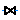

Icons for pressure loss calculation
Extends from Modelica.Icons.Package (Icon for standard packages).
| Name | Description |
|---|---|
| BendEdged_d | Geometry figure of edged bend |
| Channel_d | Geometry figure for channel |
| OrificeSuddenChangeSection_d | Geometry figure for orifice with sudden change of cross sectional area |
| OrificeThickEdged_d | Geometry figure for orifice with thick edged vena contraction |
| StraightPipe_d | Geometry figure for straight pipe |
| Valve_d | Icon for valve |
|  FlowModel | Icon for flow model in Modelica.Fluid applications |
| Bend_i | Icon for bend |
| Channel_i | Icon for channel |
| General_i | Icon for general pressure drop |
| HeatExchanger_i | |
| Orifice_i | Icon for orifice |
| StraightPipe_i | Icon for straight pipe |
| Valve_i | Icon for valve |
Geometry figure of edged bend
Geometry figure for channel
Geometry figure for orifice with sudden change of cross sectional area
Geometry figure for orifice with thick edged vena contraction
Geometry figure for straight pipe
Icon for valve
Icon for flow model in Modelica.Fluid applications
Icon for bend
Icon for channel
Icon for general pressure drop
Icon for orifice
Icon for straight pipe
Icon for valve
Automatically generated Fri Oct 02 11:08:19 2015.